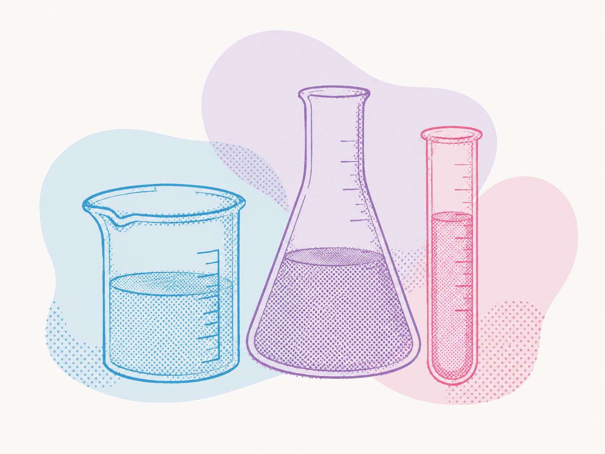
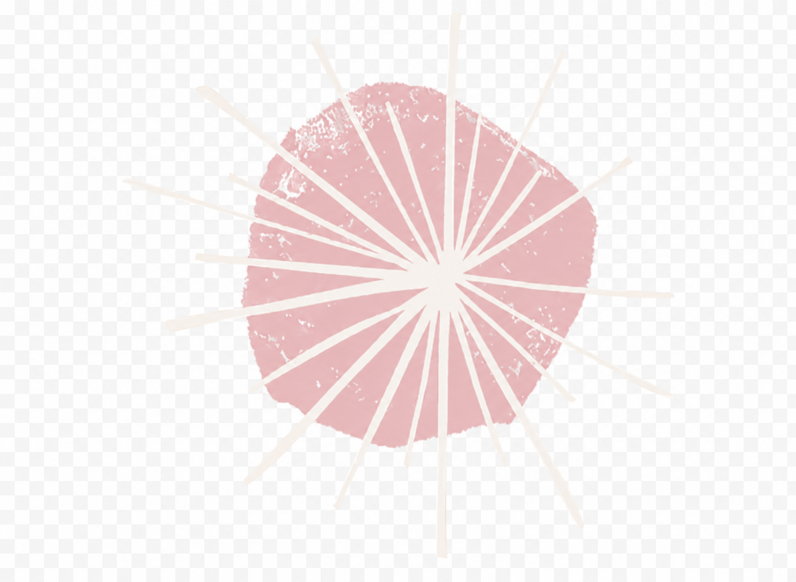
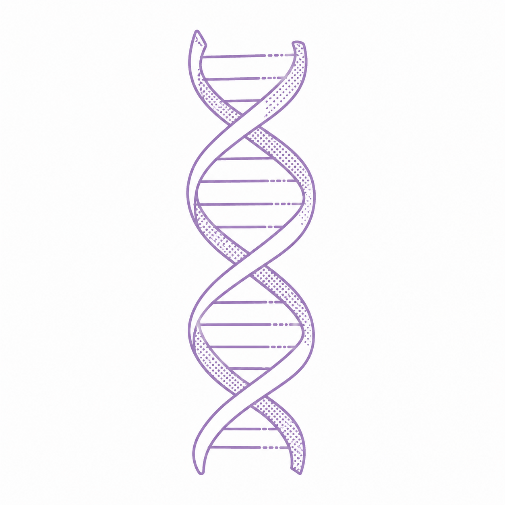

Affiliation
Department of Chemistry, Faculty of Science, Ferdowsi University of Mashhad, Mashhad, Iran.
Asal Sarviha is an undergraduate student in Pure Chemistry at Ferdowsi University of Mashhad and a Research Assistant working toward computational biology, cancer genomics, and in silico drug discovery.
Department of Chemistry, Faculty of Science, Ferdowsi University of Mashhad, Mashhad, Iran.
Computational biology, cancer genomics, in silico drug discovery, molecular docking, molecular dynamics simulations, Beacon API, Progenetix, and virtual screening.

Supervisor: Prof. Hossein Eshghi. Advisor: Dr. Hossein Sabet-Sarvestani.
GPA: 17.85 / 20
Selected courses passed at Ferdowsi University of Mashhad.

My research interests lie at the intersection of computational biology, cancer genomics, and in silico drug discovery. I am particularly interested in large-scale genomic data analysis, including the study of copy number variations and their role in cancer progression, as well as standardized frameworks such as Beacon API for interoperable biomedical data sharing. I am also motivated by molecular docking, molecular dynamics simulations, and virtual screening of bioactive compounds. By integrating bioinformatics with structure-based drug design, I aim to contribute to the identification of novel therapeutic targets and more effective, personalized cancer treatments.

Pedram Hamidi Rad, Asal Sarviha, Ali Iranpour, Amirreza Khadempir, Zahra Fakhr Kazemi.
6th Conference on Proteins and Peptides Science & Technology, Shahid Beheshti University, November 2025.
Iranian University Entrance Exam top rank, August 2023: ranked top 1% in Mathematics & Physics.
Academic references are available upon request.